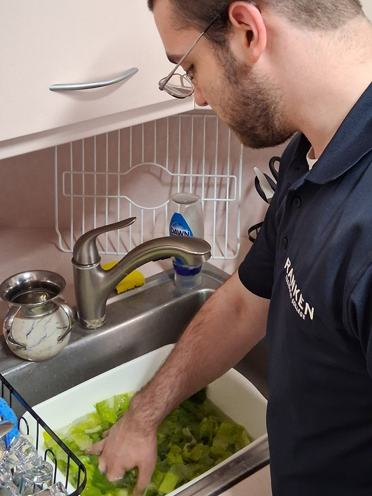
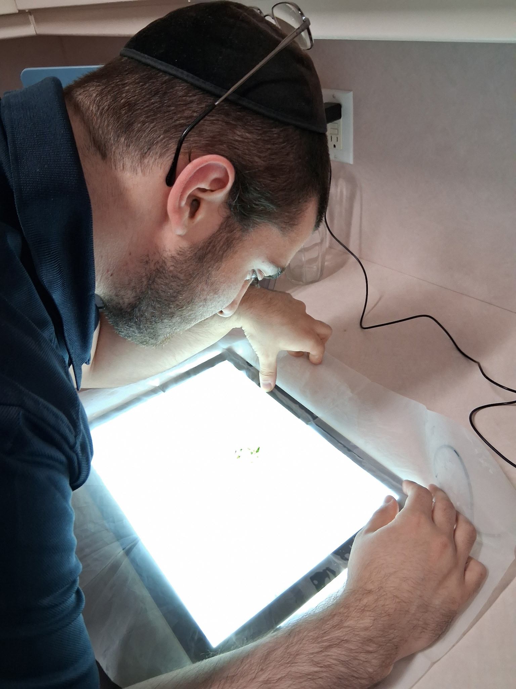
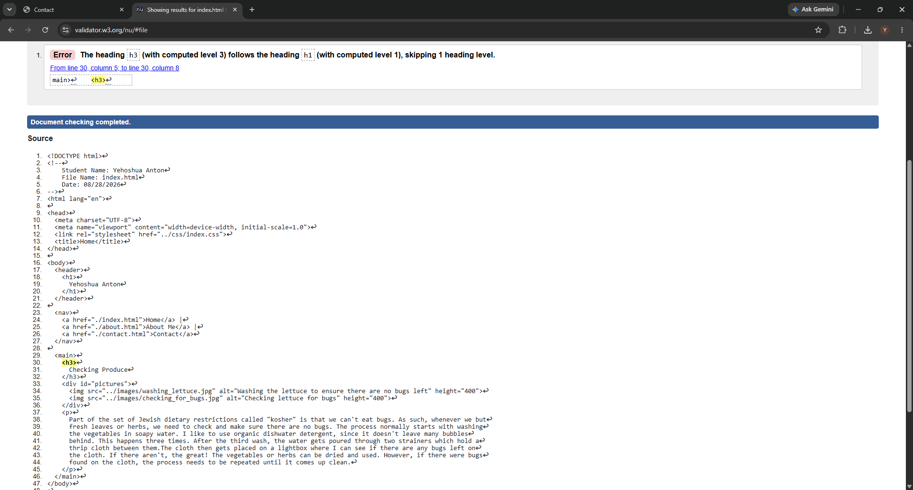

Checking Produce


Part of the set of Jewish dietary restrictions called "kosher" is that we can't eat bugs. As such, whenever we but fresh leaves or herbs, we need to check and make sure there are no bugs. The process normally starts with washing the vegetables in soapy water. I like to use organic dishwater detergent, since it doesn't leave many bubbles behind. This happens three times. After the third wash, the water gets poured through two strainers which hold a thrip cloth between them.The cloth then gets placed on a lightbox where I can see if there are any bugs left on the cloth. If there aren't, the great! The vegetables or herbs can be dried and used. However, if there were bugs found on the cloth, the process needs to be repeated until it comes up clean.
